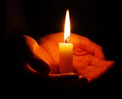

Иннокентий Анненский
Свечку внесли
Не мерещится ль вам иногда,
Когда сумерки ходят по дому,
Тут же возле иная среда,
Где живем мы совсем по-другому?
С тенью тень там так мягко слилась,
Там бывает такая минута,
Что лучами незримыми глаз
Мы уходим друг в друга как будто.
И движеньем спугнуть этот миг
Мы боимся, иль словом нарушить,
Точно ухом кто возле приник,
Заставляя далекое слушать.
Но едва запылает свеча,
Чуткий мир уступает без боя
, Лишь из глаз по наклонам луча
Тени в пламя сбегут голубое.
